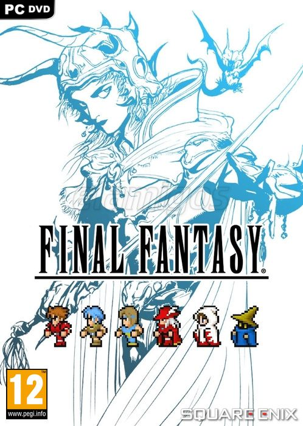

Final Fantasy I - VI Pixel Remaster 2.25GB
Género: JRPG por turnos
Incluye una IU modernizada, opciones de combate automático y más.
Cambia la banda sonora de la nueva versión, creada para la remasterización
pixelada, a la versión original, que captura el sonido del juego primero.
Ahora es posible alternar entre diferentes fuentes, incluida la fuente
predeterminada y una fuente pixelada basada en el ambiente del juego original.
Nuevas funciones adicionales para expandir las opciones del juego: esto
incluye desactivar los encuentros aleatorios y ajustar los multiplicadores de
experiencia obtenida entre 0 y 4.
Ahonda en el mundo del juego con los contenidos extras del Bestiario, la
Galería y el Reproductor musical.
.